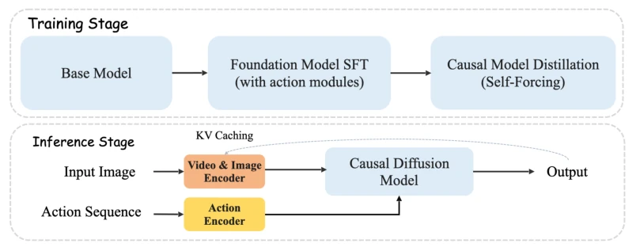
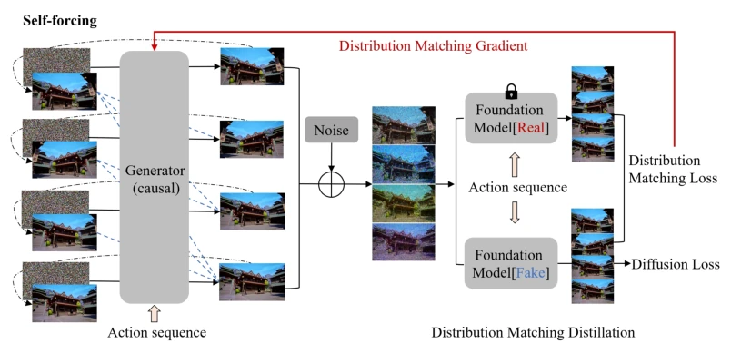
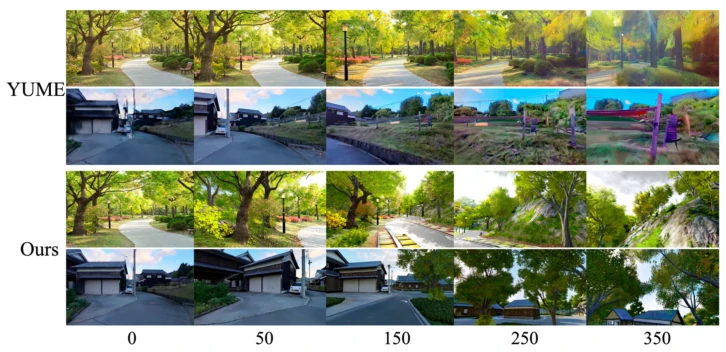
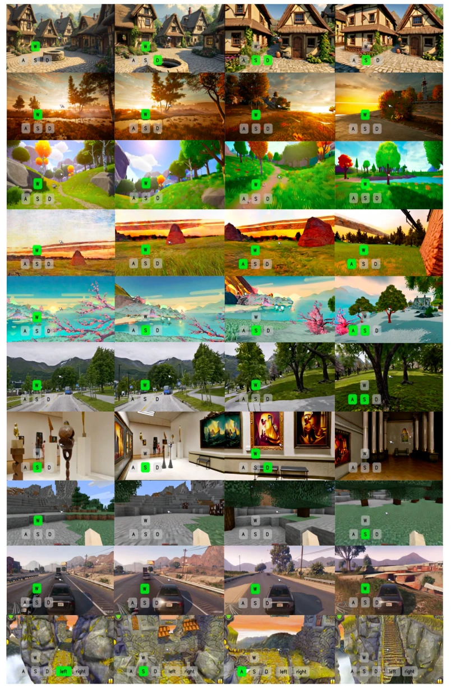
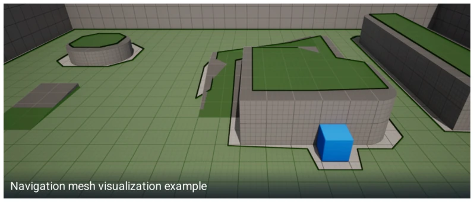
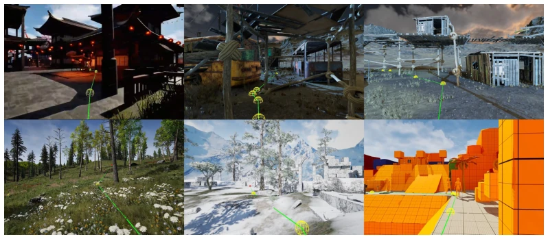
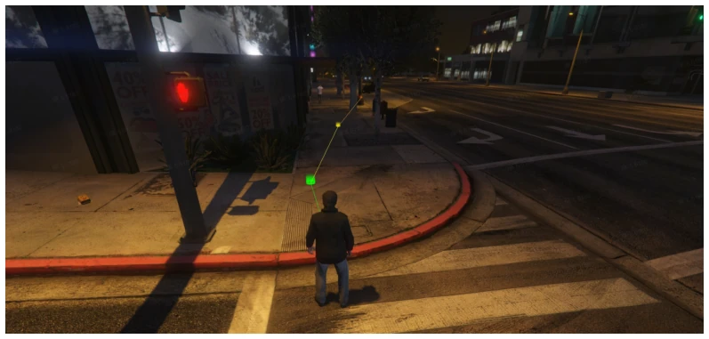
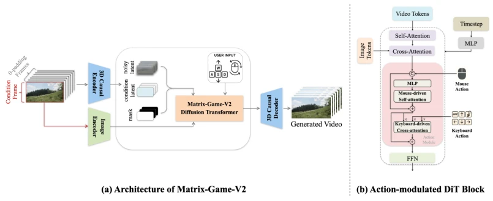
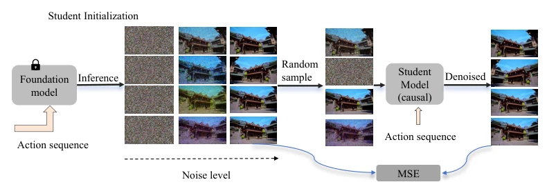
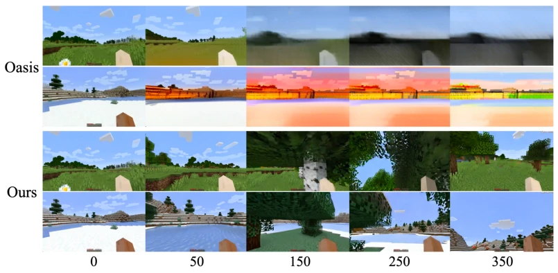

Matrix-Game 2.0 attempts to fill the gap in world models using video generation models, emphasizing real-time interaction. 25 FPS is indeed impressive, but the resolution 352x640 is simply "mosaic art" for pixel-level players. Although Self-Forcing is employed to address autoregressive errors, it remains prone to oversaturation or collapse in out-of-domain (OOD) scenarios. Open-source weights are a positive, but do not expect it to run directly within high-fidelity simulators. This resembles more of a "game video generator" than a true physical world simulator, as it utilizes no text, relying entirely on vision and key inputs, with physical law understanding relying entirely on guessing. However, for low-compute scenarios, this constitutes a decent compromise, at least superior to Oasis's long-video collapse, though physical consistency still requires refinement.
Existing interactive world models (such as Oasis [12], YUME [27]) possess fatal shortcomings. Bidirectional diffusion models exhibit slow inference and cannot respond in real-time; autoregressive models suffer from severe error accumulation, causing long-video quality collapse. Additionally, the lack of large-scale, high-fidelity interaction data makes it difficult for models to capture real physical dynamics. Matrix-Game 2.0 aims to address these pain points by achieving real-time streaming generation through causal architecture and distillation, eliminating dependence on text semantics and focusing on the physical consistency between vision and action. Specifically, targeting the error accumulation problem in long-sequence generation of existing methods, the authors employ Self-Forcing [18] for improvement, attempting to narrow the gap between training and inference to realize true real-time interaction.
The overall workflow is divided into three stages: data production, base model training, and distillation. The data pipeline, based on Unreal Engine and GTA5, constructs a synthetic dataset containing 1200 hours of video, utilizing NavMesh and RL to enhance Agent behavior diversity and ensure action-visual frame-level alignment. The model architecture is based on Wan 2.1 I2V, removing the text branch and embedding keyboard/mouse action modules. The core innovation lies in Self-Forcing distillation, converting bidirectional models into causal autoregressive models, combined with KV Cache to enable infinite-length video generation. By limiting the cache window and reducing denoising steps, 25 FPS is achieved while maintaining quality. Specifically, action signals are categorized into discrete keyboard and continuous mouse inputs, injected into DiT blocks via MLP and Cross-Attention, with RoPE replacing sin-cos to support long videos.

Figure 2: Pipelines of Matrix-Game 2.0. • Lack of large-scale, high-quality interactive video datasets with rich annotations for training, such as accurate actions and camera dynamics, due to the high cost and difficulty of collection.

Figure 10: Overview of Causal Diffusion Model Training via Self-Forcing. The distillation process aligns the student model’s distributions with the teacher model’s through self-conditioned generation. This approach effectively mitigates error accumulation while maintaining the generation quality.

Figure 12: Qualitative Comparisons on Wild Scene Generations. For wild image inputs, Matrix- Game 2.0 exhibits strong generalization capabilities, fast generation speed, and accurate interaction responses.
The dataset covers Minecraft, Unreal, GTA5, Temple Run, and Sekai. Baselines include Oasis [12] and YUME [27]. Evaluation utilizes the GameWorld Score Benchmark, encompassing dimensions such as visual quality, temporal consistency, and action control. Results indicate that in Minecraft and wild scenes, this model outperforms Oasis in long-video generation, achieving a speed of 25 FPS. Ablation experiments demonstrate that a 6-frame KV Cache is optimal. However, limitations are evident: OOD scenarios are prone to oversaturation, and resolution is low. GTA and Temple Run demonstrate cross-scene generalization capabilities, but physical consistency still requires improvement, as evidenced by bad cases shown in Figure 17, and scene consistency scores are slightly lower in quantitative metrics.

Figure 1: Real-time Interactive Generation Results. We introduce Matrix-Game 2.0, a real-time interactive video generation model. By integrating action modules and few-step distillation, it can auto-regressively produce high-quality interactive videos given an input image in 25 FPS. The demonstrated results cover various scenes and diverse styles, demonstrating its powerful generation capabilities.
其他图片Other Figures

Figure 4: An example for Our Navigation System.

Figure 5: Trajectory Examples of Collected Unreal Engine Data.

Figure 7: Trajectory Examples of Collected GTA5 Data.

Figure 8: Overview of Matrix-Game 2.0 Architecture. The foundation model is derived from the Wan [44] I2V design. By removing the text branch and adding action modules as in Matrix-Game [57], the model predicts next frames only from visual contents and corresponding actions.

Figure 9: Causal Student Model Initialization via ODE Trajectories. The proposed initialization method stabilizes subsequent distillation training by deriving a few-step causal student model from the bidirectional teacher model through optimal ODE trajectory sampling.

Figure 11: Qualitative Comparisons on Minecraft Scene Generations. Compared to Oasis [12], our model shows superior visual performance in long interactive video generations.